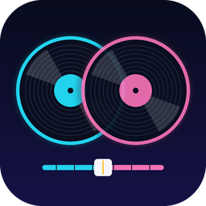

CROSS DJ PRO
Tap anywhere to start
Tap LOAD to pick a song, or DEMO to try a built-in beat.
Quick guide
- LOAD – pick a song from your phone. DEMO – built-in practice beat.
- PLAY – start/pause. CUE – tap while playing to jump back to the cue point; tap while paused to set it; hold to preview.
- Tap the waveform to jump to that spot.
- SYNC – matches this deck's tempo to the other deck.
- LOOP 1/2/4/8 – loops that many beats. Tap again to release.
- Hot cues 1–4 – tap to set, tap again to jump, hold to clear.
- HI / MID / LOW – EQ. FILTER – left = low-pass, right = high-pass.
- PITCH – speed ±16%. NUDGE – hold to speed up/slow down slightly.
- FX – choose Echo, Reverb or Flanger, set amount, press FX to switch on.
- Crossfader – blends deck A and deck B.
- REC – records the master mix and saves it to your Downloads/CrossDJ folder.
- Tap a slider's name to reset it.